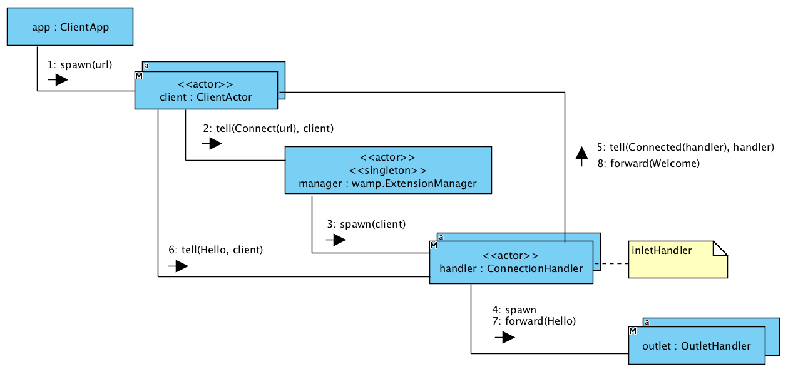

Client APIs
Akka Wamp provides your with three Client APIs for both Java and Scala. They’re all built atop the same Akka I/O extension driver but they have been carefully designed to be used with different abstractions such as actors, futures and streams.
-
Actors
Low level API intended for those who needs “full control” of how Messages are exchanged by peers. -
Futures
High level API intended for those who wants an easy and quick solution. -
Streams
Not yet supported. -
Macros
Utilities meant to reduce “boiler plate” code. For Scala developers only.
Extension manager
Akka Wamp Client APIs are all built atop of the same Akka I/O extension driver named akka.wamp.Wamp.
Every Akka I/O extension driver works for a specific network protocol (e.g. TCP, UDP, WAMP, etc.) and is accessible through a special actor, called the “extension manager”, which serves as entry point for the API. You can explicitly obtain the manager actor reference as shown by the following piece of code:
- scala
-
private var router: ActorRef = _ override def preStart(): Unit = { implicit val system = context.system val manager = IO(Wamp) manager ! Connect(new URI("ws://router.net:8080/wamp"), "json") } override def receive: Receive = { case sig @ CommandFailed(cmd, ex) => // could reattempt connection ... case sig @ Connected(handler, uri, format) => this.router = handler context become connected } - java
-
private ActorRef router; private PartialFunction<Object, BoxedUnit> connected; @Override public void preStart() throws Exception { ActorRef manager = Wamp.get(getContext().system()).manager(); manager.tell(new Connect(new URI("ws://router.net:8080/wamp"), "json"), self()); } public ActorsJavaClient() { receive( match(CommandFailed.class, sig -> { // could reattempt connection ... }). match(Connected.class, sig -> { router = sig.handler(); context().become(connected); }). build() ); }
and then send command messages to it to perform basic actions as documented in the Messages section.

As the manager receives a command messages (such as Connect) it instantiates worker actors in response (such as ConnectionHandler). Worker actors present themselves to the API user in signal messages (such as Connected) replied to the command that was sent.